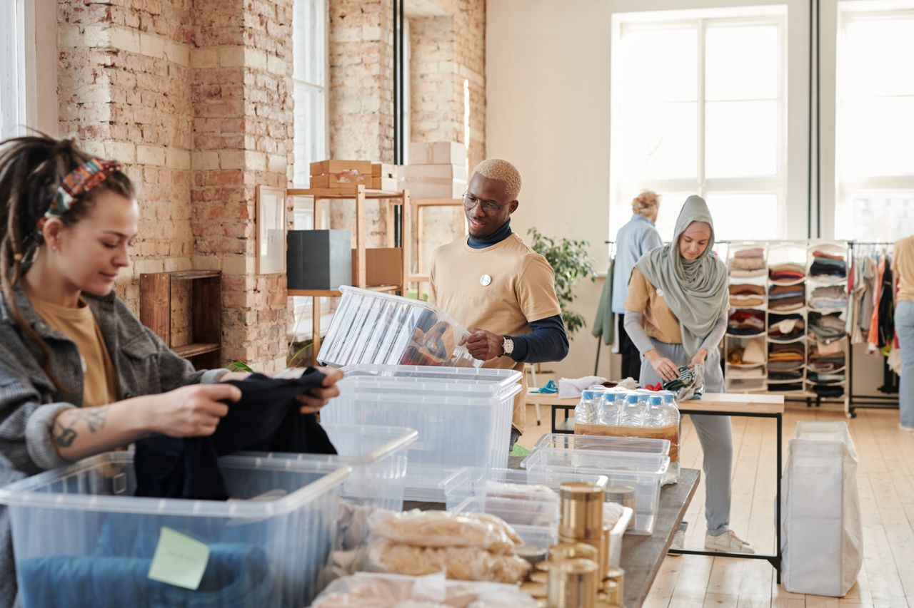

Quero doar
Uma peça de roupa pode mudar um dia, e uma vida
Aquela camisa parada no seu guarda-roupa pode aquecer alguém que precisa. Doe com carinho e faça a diferença na vida de famílias da sua comunidade.

Como funciona?
- Separe as roupas em bom estado.
- Preencha o formulário abaixo.
- Entraremos em contato para combinar a coleta ou entrega.
- Suas roupas chegam a quem mais precisa.
Nosso impacto
- +1.200 peças doadas
- +350 famílias ajudadas
- +80 doadores voluntários
Quem já doou
"Foi simples e rápido. Saber que minhas roupas vão ajudar alguém me deixou muito feliz!"
Faça sua doação
Dúvidas frequentes
Posso doar roupas usadas?
Sim, desde que estejam limpas e em bom estado.
Vocês buscam as doações em casa?
Entraremos em contato para combinar a melhor forma de coleta ou entrega.
Posso doar sapatos e agasalhos?
Pode sim! Aceitamos calçados, agasalhos e roupas infantis.